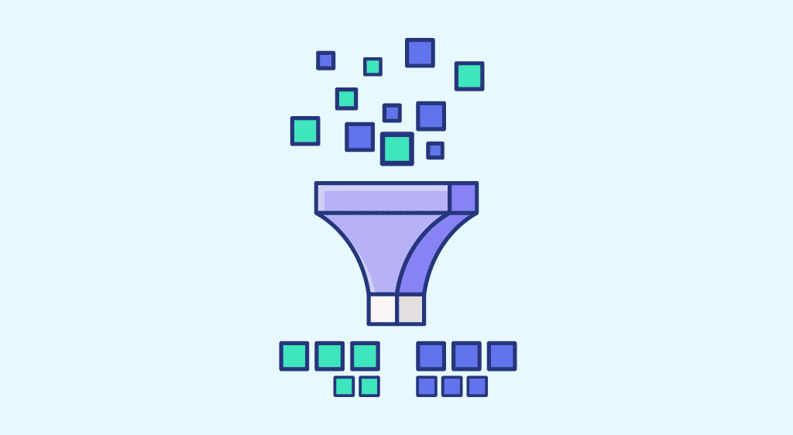
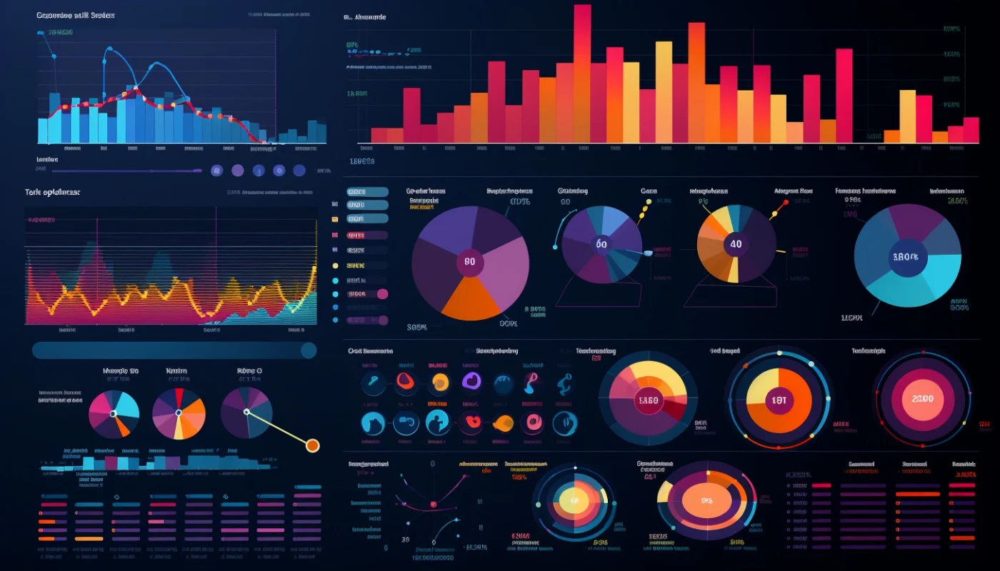
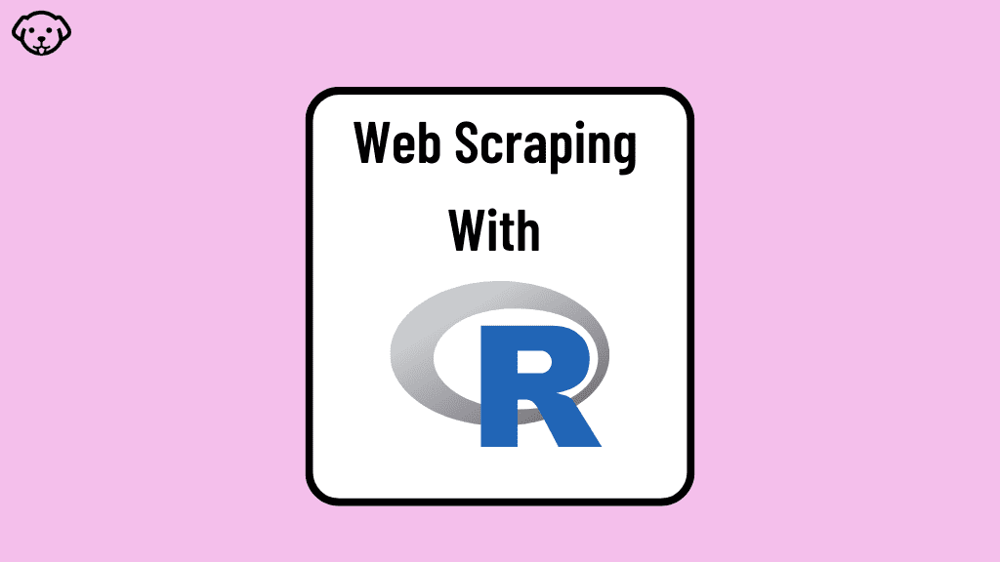

Proyecto que busca predecir fallas de maquinarias mediante herramientas de Machine Learning, específicamente
utilizando modelo de Random Forest con el objetivo de clasificar fallas, para posteriormente detectar
oportunidades de negocio y tomar acción comercial proactiva.

Proyecto que muestra paso a paso como podemos limpiar y transformar bases de datos completamente sucias para un Ecommerce.
Proyecto que muestra paso a paso como podemos hacer análisis exploratorio en una base de datos. Se trabaja con datos de
Twitch.

Proyecto que ilustra cómo transformar grandes volúmenes de datos en visualizaciones interactivas y comprensibles para la toma de decisiones en un negocio.

Proyecto que demuestra cómo utilizar R para extraer, limpiar y analizar datos de diversas fuentes web, transformándolos en información útil y estructurada.